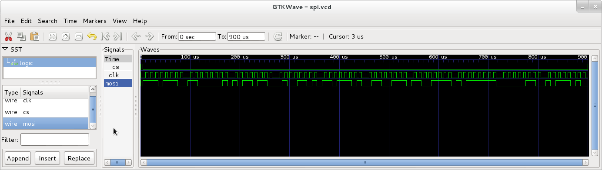

Ripyl VCD tutorial¶
This tutorial demonstrates how to generate Value Change Dump (VCD) files from a protocol simulation.
You can use the Ripyl simulation facilities to generate VCD test vectors with the ripyl.io.vcd module. These files can be used to generate stimulus in applications such as pattern generators and HDL simulations.
The procedure for creating a VCD file is to first define a sequence of VCD channels, each containing the necessary data and a name. A VCDInfo object is then created which can be used to write a VCD file.
The VCD format uses integer time stamps with a resolution established by a timescale parameter. All edge transitions that occur within one timescale unit will be merged to the same time stamp. If the timescale is too large, entire edge transitions may be omitted if the state does not change between the start and end of a timescale unit. The timescale can either be explicitly set by passing a float to the VCDInfo constructor or it can be determined automatically with symbol rate analysis on a specified channel. Valid timescales must be powers of 10. In both cases the raw timescale parameter is coerced to a valid power of 10 less than or equal to the raw value (e.g. 3.0e-8 is coerced to 1.0e-8).
import ripyl.io.vcd as vcd
import ripyl.protocol.spi as spi
import random
# Simulate some SPI communication
data = [random.randint(0, 255) for _ in xrange(10)]
clk, mosi, cs = spi.spi_synth(data, 8, 100e3)
# Define the channels included in the VCD
channels = [
vcd.VCDChannel('clk', list(clk)),
vcd.VCDChannel('mosi', list(mosi)),
vcd.VCDChannel('cs', list(cs))
]
# Explicitly specify the timescale ...
spi_vcd = vcd.VCDInfo(channels, timescale=1.0e-6, comment='SPI simulation')
# ... or, alternatively, use the symbol rate of 'clk' to set the timescale
spi_vcd = vcd.VCDInfo(channels, timescale='clk', comment='SPI simulation')
print 'Timescale is:', spi_vcd.timescale_si
# Write the VCD file
spi_vcd.write('spi.vcd')
This produces a VCD file spi.vcd that can be opened in a waveform viewer like GTKWave:
{kind=link}